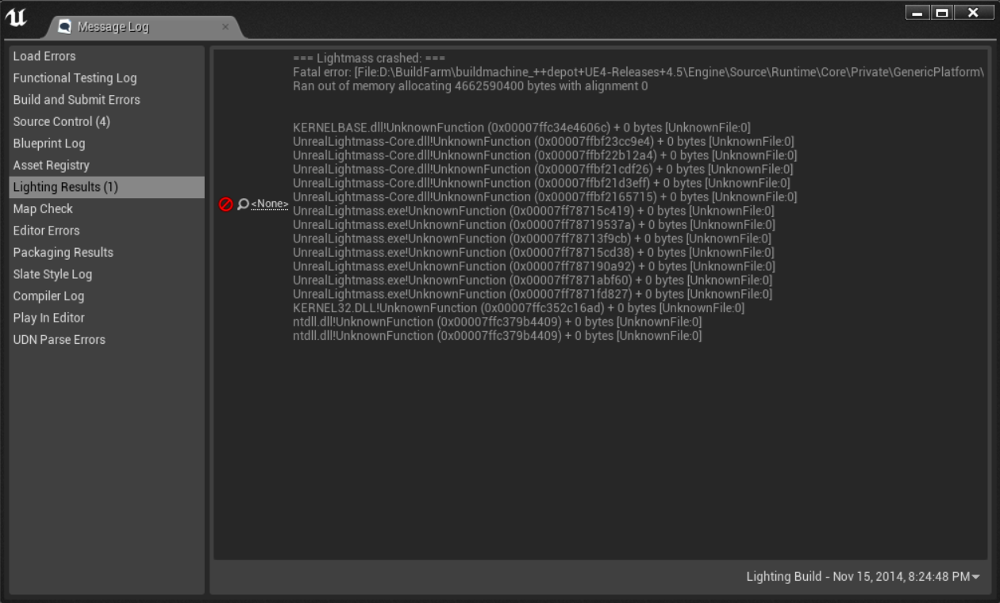
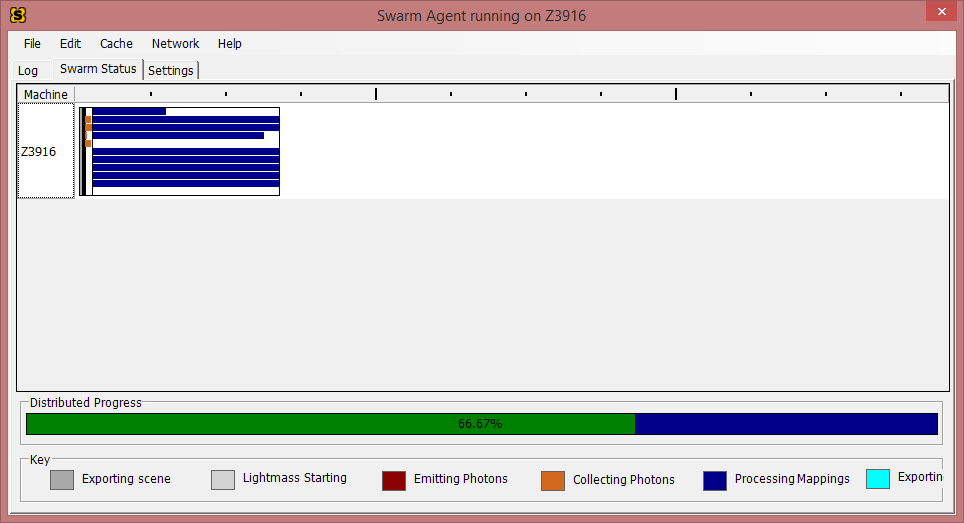
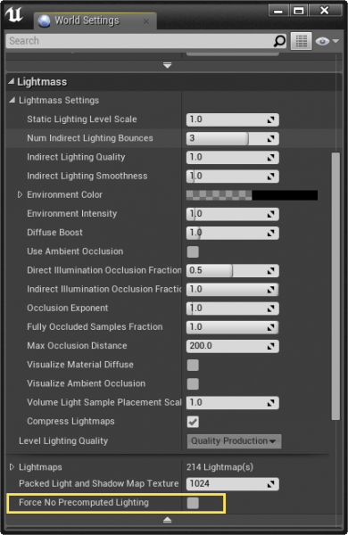
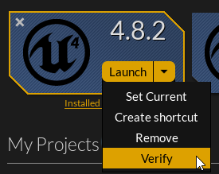
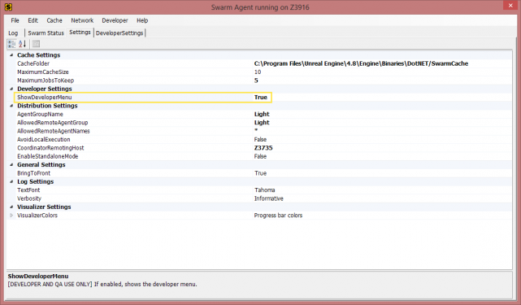

Swarm Agent Troubleshooting
Contents
- 1 About This Guide
- 2 Recommendations and Tips
-
3
Frequently Asked Questions
- 3.1 "Lightmass Crashed" common error messages
- 3.2 Why is my light build stuck at [X]%, or Why does building lighting take so long?
- 3.3 Why Swarm Agent use 100% of my CPU when building lighting?
- 3.4 Why isn't Swarm Agent being used if my lights are set to Movable/Dynamic?
- 3.5 How can I use my GPU to build lights? Or Why isn't my GPU used when building lighting?
- 3.6 How do I get or check my Logs for Swarm Agent?
- 3.7 How do I "Clean" and "Validate" my Swarm Agent
- 3.8 Where is my Swarm Data Cache stored, and Can I change its location?
- 3.9 What does "Light build failed. Swarm Agent failed to kick off" mean, and How can I fix it?
- 3.10 How do I set Swarm Agent to be the Highest Priority?
- 3.11 Why is Swarm Agent not launching, or What does "UnrealLightmass.exe-Application Error..." mean?
- 3.12 Swarm Agent Fails with IOException Error
- 3.13 Swarm Log: System.Net.Socket Error/Swarm Agent/Coordinator Port Used By Another Process
About This Guide
.
This guide is intended to go over some best practices when using Lightmass to build static lighting in Unreal Engine 4 and to address some of the more common issues that can arise with Swarm Agent while doing so. This guide is in no way meant to be comprehensive and is a living document that can be updated along with engine releases.
Swarm Agent is a program that is used to process Unreal's Lightmass calculations for a single system or it can distribute its workload across a network to other computers through Swarm Coordinator. Largely, Swarm Agent will go unnoticed to most who are not using network distribution for light builds since it will startup, perform its tasks, and shut down once the light build has finished.
Swarm Agent Documentation and Other Links
- Lightmass Global Illumination
- Swarm Agent Documentation
- UDK-Networking Swarm Agent
- Brian Goodsell's Tutorial: Setting Up Swarm for Multiple Machines
_________________________________________________________________________________________________
Recommendations and Tips
_________________________________________________________________________________________________
General Tips for using Lightmass in Unreal Engine 4
Reducing Build Times
- Lightmass Importance Volume:
When using Lightmass Importance Volumes it’s important to know and understand that you can use as many of these as you like. You are not limited to a single instance in your level. The idea behind these volumes is to focus photons in a single area where higher quality lighting is needed where the player is. Anything outside of these volumes will only get a single bounce of lighting and will not look as high quality as the lighting generated within the volume.By using these volumes you can reduce the amount of calculation that is needed for the scene and this will help increase light builds. It’s important to also note that these volumes are not meant to be scaled to extreme sizes. This defeats their use and purpose.
For more information have a look at the documentation here: Lightmass Basics
- Lightmap Resolutions:
These resolutions play a big part in how long it can take for Swarm Agent to build a scene. The higher the lightmap resolutions for your meshes the more time it can take to calculate and generate these textures. It is best to use the lowest possible resolution that still gives the results you are happy with.
It is not recommended to set all static meshes to higher resolutions. If you are finding that you have to set a mesh to a significantly higher resolution you may want to look at breaking the mesh into smaller pieces so that the Lightmap UV can be more effectively used, or you may simply need reorganize the Lightmap UV to get better results by using the 0,1 UV space better.
- Foliage Tool: Lightmap Resolutions:
For instanced static meshes placed with the Foliage Tool these assets will use the default set Lightmap Resolution of the static mesh. This will likely generate a warning when you build lighting. It’s best to go into the Foliage Tool’s Instance Settings and enable Lightmap Resolution with a lower value of 4 or 8. With instanced static meshes this should be sufficient depending on the number of static mesh instances that have been painted into the scene. These will be clustered together into a single lightmap based on cluster size.
- Number of Assets and Lights:
The number of assets that cast shadows and the number of shadow casting lights in the scene that are Stationary or Static will also add to the number of calculations that need to be done when using Lightmass. These calculations can directly affect how much Swarm Agent needs to process and essentially how long the light build will take.
- System Specs:
Swarm Agent is a very CPU intensive process that requires a lot of calculations. Depending on your system specs this can speed up or slow down the process or even cause Lightmass to crash. A fast CPU can help improve calculation speed. The amount of RAM needed is dependent upon the size of the scene, number of lights, and assets being calculated. Lightmass will Crash if it runs out of memory. This is often reported as a bug, but it is simply a limitation of your system setup. See the other tips above to help reduce the chance of this happening or increase your systems RAM. _________________________________________________________________________________________________
Building Large Worlds
If your project is going to use a larger world or even a fully open world with thousands of assets, instanced foliage, etc it is generally not recommended to use Lightmass to build lighting for these types of worlds.
One may argue that it has been preached that “Static lighting is better for performance and looks better.” Yes, this is a true statement, but within certain restrictions. This is not to say that static lighting cannot be used for larger worlds, it is just not an ideal use due to the memory it would take to store all the generated lightmap textures and the amount of memory it would take to build the level in the first place.
Larger worlds and open worlds will generally use dynamic lighting. This may seem counter-intuitive when thinking about how static lighting has zero overhead at run-time compared to dynamic lighting. This again is true, but instead of calculating shadows you will have to worry about the lightmap textures having to load for all those meshes. It’s better to focus on using dynamic lighting and then optimizing your games by gauging the performance by profiling the CPU and GPU for any bottlenecks that may come up.
For more information about profiling have a look at the following documentation and YouTube Support stream:
- Documentation: Profiler
- Documentation: Performance and Profiling
- Documentation: GPU Profiling
- Support Stream Video: Rendering Best Practices
_________________________________________________________________________________________________
Frequently Asked Questions
_________________________________________________________________________________________________
"Lightmass Crashed" common error messages
"Ran out of Memory"

Just as the explanation suggests, this crash is because there was not enough memory to build lighting for the scene as is.
Steps to try:
- Add a Lightmass Importance Volume(s) around your playable areas. (See the Tips section above for more information)
- Lower the number of meshes in the scene
- Lower the Lightmap Resolution for meshes that do not need higher quality shadows.
- If using the Foliage Tool, use lightmap resolutions starting with 4 or 8, since meshes will be clustered together into a texture atlas.
- Clean and Validate cache
- Increase the amount of Virtual Memory that is available. Think of this as an overflow when RAM is running low. Do not rely on this over adding additional RAM though.
- Add additional RAM to your system.
"Assertion Failed: (Index>=0)&(Index<ArrayNum))"

Steps to try:
- Clean and Validate Swarm Agent Cache
_________________________________________________________________________________________________
Why is my light build stuck at [X]%, or Why does building lighting take so long?
If you ever see that lighting is taking a long time to build or if you are not sure if the light build process has frozen you can simply open Swarm Agent program to see what exactly is going on.
Once you have Swarm Agent open you can check the “Swarm Status” tab. Here you can check the progress for the light build processing and a percentage bar for where the light build is currently at in its process.

Steps to try:
- Reduce the number of meshes and/or lights in the scene
- Use Lightmass Importance Volume(s)
- Lower the Lightmap resolutions of your meshes
- Use multiple computers to distribute light builds using Swarm Agent and Coordinator
- Use a recommended or more powerful CPU
_________________________________________________________________________________________________
Why Swarm Agent use 100% of my CPU when building lighting?
The process of building lighting with Swarm Agent and Lightmass is a very CPU intensive process. Depending on the number of objects in the scene, size of the world, the Lighting Quality, lightmap resolutions, and a number of other other processes going on this can add to how much CPU power is needed to build the lighting.
You can adjust the number of processors being used for local and remote jobs by doing the following:
In the Settings tab of Swarm Agent, locate the option for ShowDeveloperMenu and set this to True .
Once that has been enabled you will see a new tab named
DeveloperSettings
. In here you can change
LocalJobDefaultProcessorCount
or
RemoveJobDefaultProcessorCount
.

_________________________________________________________________________________________________
Why isn't Swarm Agent being used if my lights are set to Movable/Dynamic?
It is a common misconception that all lighting in Unreal Engine 4 needs to be built. This isn't really the case though. This may stem from thinking that the Build button in the tool bar is only associated with building lighting when, in-fact, there are a number of other things going on like building geometry, nav meshes, and a number of other things. So if you're concerned that you're seeing some form of action here it is good to know that this handles more than just building lighting.
Swarm Agent is used by Lightmass when needing to use baked/pre-computed lighting which is why it will only work with Static/Stationary light mobilities.
Note: If you've made the decision to use only Movable/Dynamic lighting in your game, it's best to go ahead and disable pre-computed lighting in one of two ways.
- You can disable on a per-map basis by going to World Settings > Lightmass > Force No Precomputed Lighting is checked.
- You can disable Static Lighting entirely for the project by going to Menu > Window > Project Settings > Rendering > Lighting > Allow Static Lighting set to unchecked.
-

-

________________________________________________________
How can I use my GPU to build lights? Or Why isn't my GPU used when building lighting?
Building lighting uses the CPU mostly, while only using the GPU when exporting the processes.
While it wouldn't be impossible to use Lightmass calculations with the GPU, but this is not currently being worked on or planned in the near future. The ideal solution is a lighting algorithm which renders real-time using the GPU when you are previewing, but then can be baked down into a lightmap using that same algorithm when you are a ready build. However, there are some challenges with this though. It would be hard to make the editor scale down, all of the current GI methods would have to be re-written, it would not be able to get as high of quality of end results, and it could make the editor much less stable due to the load put on GPUs. GPU's are known to be notoriously unstable with heavy loads.
_________________________________________________________________________________________________
How do I get or check my Logs for Swarm Agent?
You can locate your Logs for Swarm Agent by going to the Log tab.
When you open the Log tab you should see something like the image below. If you see a blank log then likely indicates you have not previously built lighting for any Static/Stationary lights that require Lightmass calculations. The log will can potentially point to any issues with the light build.
For previous light build logs you can check the location of your .
If there is not enough information in the log to come to a conclusion try changing the log's Verbosity. This can be changed in the
Settings
tab >
Verbosity
. This will change how much information is sent to the log.
You have the options of:
- Silent
- Critical
- Simple
- Informative (Default)
- Complex
- Verbose
- Extra Verbose
- Super Verbose

_________________________________________________________________________________________________
How do I "Clean" and "Validate" my Swarm Agent
There are two options located Swarm Agent's Menu for in the Cache drop down for Clean and one for Validate (See image below).
- Clean: This will clear out the cache at users request.
- Validate: This will validate all cache entries and hashes to make sure they are up to date.
Note: Cleaning and Validating the Cache can sometimes resolve any issues that Swarm Agent may be running into while building lights.
_________________________________________________________________________________________________
Where is my Swarm Data Cache stored, and Can I change its location?
You can view and change the location of where your Swarm Cache is saved by opening Swarm Agent and going to the Settings tab. Under the Cache Settings drop down you will see the CacheFolder . (See image below)
You can change the file path on the right side to any location you would like. You, also, have the option to change the settings for the maximum size of the cache. This is measured in gigabytes. There is another settings for the maximum number of jobs to keep output logs for as well.
_________________________________________________________________________________________________
What does "Light build failed. Swarm Agent failed to kick off" mean, and How can I fix it?
If you are seeing this issue there are a couple of things that could be causing Swarm Agent to not initialize.
Possible reasons Swarm fails to kick off:
- Having multiple instances of Swarm Agent open
- Open your Task Manager and make sure there are not multiple Swarm Agent processes running
- Corrupt levels and/or assets
- Turn off your Firewall/Anti-Virus software
- Restart the editor
- Hard Drive space
- Installation or corruption issue with the engine
- Source Build issue with UnrealLightmass
Steps to try:
- Try restarting Unreal Engine 4 and/or your computer.
- Check Task Bar and/or Task Manager for multiple instances of Swarm Agent running. Close all or more than a single instance.
- Disable Firewall and/or Anti-Virus software. If this works, make sure to add an exception for SwarmAgent.exe
- Systematically go through and remove meshes from the level to see if one of these is causing the failure. This is a brute-force method and should be used as a last attempt when narrowing down something like this.
- Test building lighting in known levels with assets that work, like the Default Level from Starter Content or one of the Template maps.
-
Verify the engine by going to the Epic Games Launcher > Library > Select Engine Version > Verify (see image below)

- Re-install the engine
If Building from Source Code
- Rebuild UnrealLightmass solution
If you have tried these steps and are still experiencing the issue please post a question on AnswerHub with the steps you've tried and adequate steps to reproduce the issue.
_________________________________________________________________________________________________
How do I set Swarm Agent to be the Highest Priority?
If you were to open up Swarm Agent and see that it takes a little bit before Swarm kicks in for processing you can change this to make it start the process more quickly by adjusting the following settings.
- Open Swarm Agent > Settings tab
- Set ShowDeveloperMenu to True
- There will now be a new tab named "DeveloperSettings"
- Change the LocalJobsDefaultProcessPriority to BelowNormal
- Change the RemoteJobsDefaultProcessPriority to Idle
-

-

_________________________________________________________________________________________________
Why is Swarm Agent not launching, or What does "UnrealLightmass.exe-Application Error..." mean?

If you are seeing this issue pop up this means that there is something that is preventing the application from opening in Windows and is not directly a cause of Unreal Engine 4.
If you're using 4.9 or earlier make sure that you have the latest VS2013 dependencies installed and uninstall any dependencies that may no longer be needed.
If you're using 4.10 or later you will need to have the VS2015 dependencies installed.
You can download the Visual Studio Dependencies from Microsoft's website:
VS2013: http://www.microsoft.com/en-us/download/details.aspx?id=40784
VS2015: https://www.microsoft.com/en-us/download/details.aspx?id=48145
If you’re still having issues with this try using the free application Dependency Walker to troubleshoot any DLL issues that may be preventing UnrealLightmass.exe from loading.
You can download Dependency Walker from their website here: http://www.dependencywalker.com/
_________________________________________________________________________________________________
Swarm Agent Fails with IOException Error
When seeing this error you may need to check your Swarm Agent log for any additional details.
Steps to possibly correct this issue:
- Check your level where lighting will not build for any NULL assets. These would be assets that have no reference. You can see these in your World Outliner and when you select the asset there you will see that no asset is assigned in the Details panel.
_________________________________________________________________________________________________
Swarm Log: System.Net.Socket Error/Swarm Agent/Coordinator Port Used By Another Process
There are some occasions where Swarm Agent will fail to kickoff or distribute a build because the ports that are needed for Swarm Agent and Swarm Coordinator, 8008 and 8009, are in use by another process.
Note: The steps below will help you identify the problem but not necessarily solve the problem since this is out of the purview of troubleshooting Swarm Agent/Coordinator and is in-line with solving a port assignment issue within Windows.
Common error seen in Swarm Agent logs:
- Exception details: System.Net.Sockets.SocketException (0x80004005): No connection could be made because the target machine actively refused it 192.168.1.34:8009
You can download the free app TCPView to be able to quickly identify which ports are being used by what processes. You can download it from here: https://technet.microsoft.com/en-us/sysinternals/tcpview.aspx

- When you open TCPView you’ll want to click on the tab for Local Port so that they are lined up in numerical order.
- Then click on View in the menu bar and set the Update Speed to 5 seconds or Paused. This will make it easier to see without the ports and processes being used updating rapidly.
- Now scroll down and see what applications are being used by Port 8008 and 8009.
Now that you’ve identified the processes that are using the ports and they are potentially not Swarm Agent/Coordinator you’ll need to research how to reassign port addresses so that these ports can be used by Swarm Agent/Coordinator instead of these other programs.
If you find that Swarm Agent/Coordinator is using these ports then you may want to try the following:
- Checking the Log while in super verbose mode to see if any issues are presented.
- Re-installing the latest .NET framework